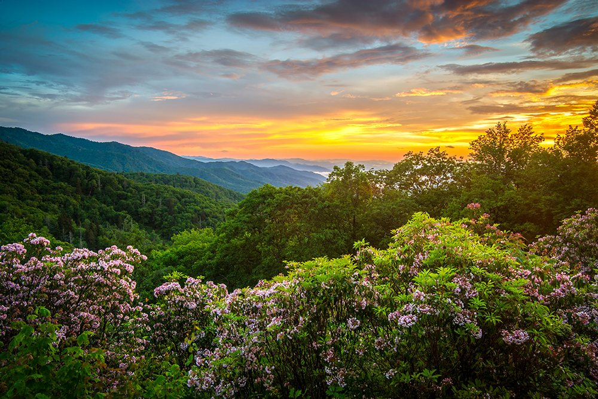
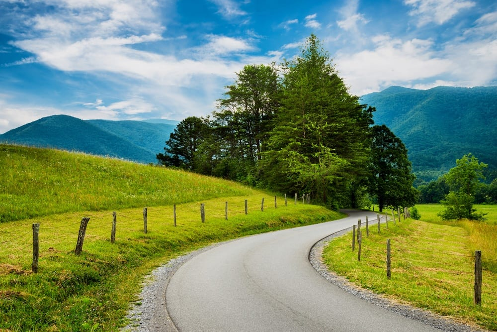
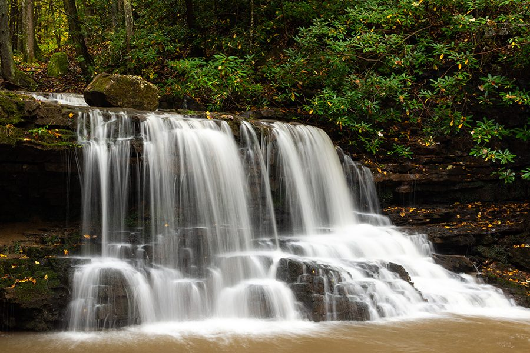
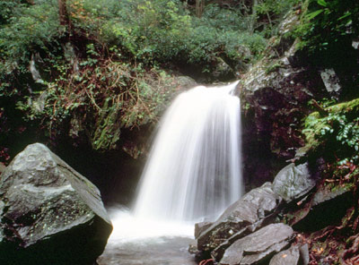
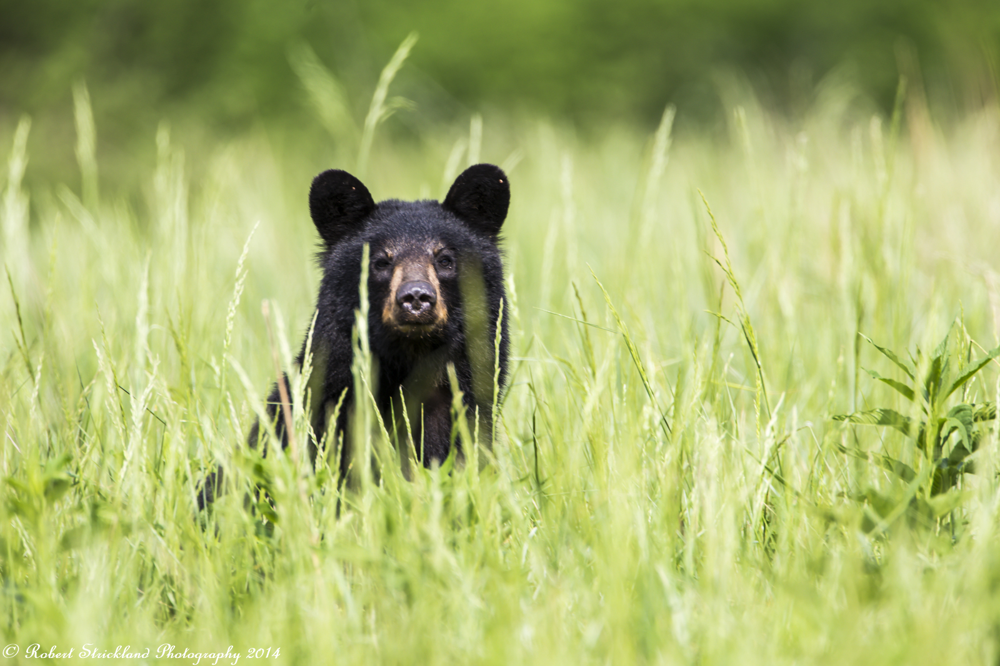
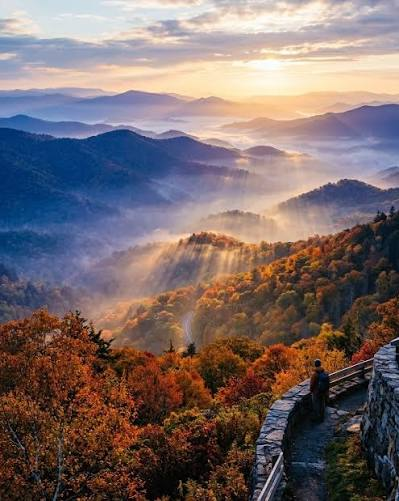
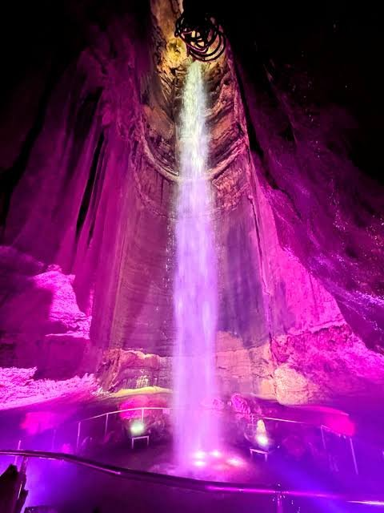
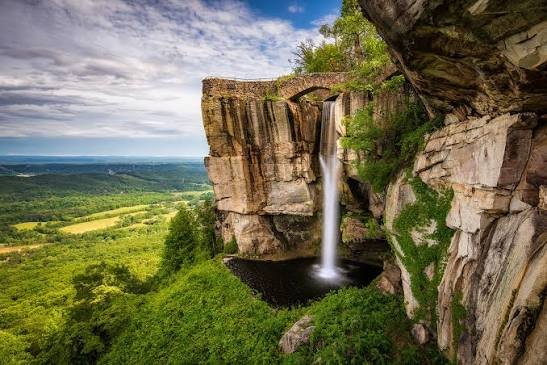

Live info
Mountain weather and park roads change fast — these stay current, so check them the week of (and each morning).
The Smokies, in a few frames
Tap any postcard to make it big.






Slow mornings, scenic afternoons, ice cream at night
This one’s built to feel calm. Coffee on the balcony while you look at the mountains. A couple of easy stops instead of ten crammed attractions. One really good sunset a day. Enough flexibility that everyone gets a trip that fits them — nobody dragged around.
Balcony coffee, no alarms.
A stop or two, lots of window-down driving.
Walking downtown Gatlinburg lit up.
Even if it’s just from the balcony.
Seven days at a glance
Tap any day to jump to it.
…or use each day’s own Maps button for just that day’s stops.
What’s actually booked
Only two hard commitments — the resort and the penguins. Everything else stays flexible on purpose.
915 Westgate Resort Rd, Gatlinburg, TN 37738
Balcony coffee + ridge sunsets are the whole morning-and-evening plan. Ask about the water park, lazy river & on-site restaurants.
📍 MapTuesday, Aug 18 · 11:30 AM
88 River Rd, Gatlinburg — downtown. This anchors Tuesday; the rest of that day is built around it.
🐧 MapThe activity picker
Tap a mood, add a filter or two, and it narrows all the Smokies options down to what fits the day. Great for the open Wednesday — or any morning the plan needs to bend.
Wildlife, cabins & mountains — almost all of it from the car. Best at dawn or dusk for bears, deer & turkeys.
Flat ~1-mi round trip from Sugarlands — the park’s easiest waterfall.
Two pretty spots you see right from Little River Road. No hiking.
5.5-mi one-way forest drive; old cabins & Place of a Thousand Drips.
The classic layered-ridge view — step out of the car and there it is.
Huge views from the parking area; the paved ½-mi path to the tower is steep but optional.
Penguins, shark tunnel, jellies. Flat, indoors — perfect rain or heat escape.
8-mi loop of 100+ studios — browse shop to shop with barely any walking.
Fudge, moonshine, quirky shops, river benches.
A chondola rides you up (no climbing) to treetop walks & views.
Chairlift up to the longest pedestrian suspension bridge in the US.
Aerial tram up to indoor fun & overlooks — an easy A/C escape.
Mom’s day. Coffee, feet up, a book, the ridge in front of you.
Book ahead and fully decompress. The long-hours-on-your-feet antidote.
Great Smoky Mountain Wheel, fountains, shops, mini-golf. Flat & lively.
Ride the rails downhill — a thrill for whoever wants one, skippable for the rest.
Sit-down flight of samples downtown, live music some nights. Indoors.
Underground-waterfall day trip to Chattanooga. See the Day Trip notes first.
If we only have…
Weather and energy change fast. Grab the shape that fits the moment.
Drive Roaring Fork, peek at Place of a Thousand Drips, grab ice cream downtown on the way back.
Cades Cove loop with a packed lunch. Home by mid-afternoon to rest.
Aquarium + coffee + the Arts & Crafts loop + a moonshine tasting. Barely get wet.
Foothills Parkway or a Newfound Gap overlook for a five-star sunset. Bring a layer.
Head up high (Newfound Gap / Kuwohi are much cooler) or go indoors: aquarium, tram, tasting room.
Resort pool, balcony, the puzzle, and an easy dinner in Gatlinburg.
Ease into the mountains
No agenda today but arriving softly. Get the car unloaded, the fridge stocked, and everyone onto a balcony before the light goes.
Cades Cove
The best “everyone’s happy” day in the Smokies — and almost all of it happens from your seat. An 11-mile one-way loop through a green valley ringed by mountains, dotted with historic cabins and churches.
The flat gravel path to the John Oliver Cabin is short and easy. Cable Mill has a few gentle, mostly-level walks.
You don’t have to leave the car for this to be a great day. Roll the windows down.
🐻 Cades Cove cheat sheet
Waterfall day, the easy way
Mom’s waterfall wishlist — routed to be mostly roadside and short flat strolls. Full list with difficulty is in the Waterfalls tab.
Penguins, then downtown
Anchored by your 11:30 AM Breakfast with Penguins at Ripley’s Aquarium. A walkable, low-driving day — park once and wander.
Choose-your-own day
A deliberately open day. Read the room over coffee, then open the Activity Picker to match the mood. Three ready-made shapes:
🟢 Every option here has a low-effort version🗺️ Roaring Fork + Arts loopUp to Newfound Gap
The classic Smokies scenic drive climbs to a mile-high pass with those layered blue-ridge views. The best overlooks are steps from the car.
A slow goodbye
No cramming on the last morning. One good breakfast, one last souvenir, one more look at the mountains, then the road.
Rock City & Ruby Falls — the honest version
Mom mentioned these — the underground waterfall (Ruby Falls) and clifftop gardens (Rock City) near Chattanooga. They’re genuinely cool, and also ~2 hours 15 minutes each way, so this eats a full day. The real picture:
An elevator drops you 260 ft, then a paved ~1-mile round-trip cavern walk to a 145-ft underground waterfall. No big stairs, but passages are narrow and cool.🟡 Paved · narrow in spots
Clifftop garden trail with famous overlooks and a swinging bridge — but lots of uneven stone steps and a squeeze called Fat Man’s Squeeze.🟠 Stairs & tight squeezes


Waterfalls, by difficulty
Mom’s waterfall wishlist — sorted so it’s obvious which are truly easy and which are a real trail. The easy ones up top are Monday’s route.
Flat ~1-mi round trip from Sugarlands Visitor Center. The one everyone can do.
🟢 EasySeen from a pullout on Little River Road. Stay in the car or step to the rail.
🟢 EasyRoadsideA powerful chute right beside its parking lot on Little River Road. Just a few steps.
🟢 EasyRoadsideA wall of little cascades on the Roaring Fork loop, feet from the car. Best after rain.
🟢 EasyRoadsideNear Bryson City, NC — a short loop with a footbridge. Pretty, a little uphill.
🟡 Light walkingThe one you can walk behind — but it’s ~2.6 mi round trip on a trail with roots & climbing.
🟠 ModerateReal trailPaved but ~2.6 mi round trip with steady uphill and some drop-offs.
🟠 ModeratePaved but longGood food, good value
Top-rated local favorites that won’t wreck the budget, sorted by craving.
🥞 Breakfast
The pancake institution since 1960. Go early — the line is the price of admission. Worth doing once.
Lumberjack-sized skillets and cinnamon rolls the size of your face. Big family energy.
In Sevierville on the way in — famous cinnamon rolls, biscuits and country breakfasts at a fair price.
🍗 Southern & family-style
All-you-can-eat, passed family-style: fried chicken, pot roast, sides. Feeds five hungry people cheaply.
Country cooking beside a working 1830s mill in Pigeon Forge. Comfort food done right.
🍖 Barbecue
Tiny Sevierville spot, consistently top-rated. Smoked meats, low prices, no frills.
Ribs, pulled pork and a big breakfast bar right in Gatlinburg.
🍔 Casual crowd-pleasers
Scratch-made New American in Pigeon Forge — burgers to fresh trout. Something for everyone; go a little early.
Burgers, wings, pizza and local beer. The easy “everybody find something” dinner.
Solid pizza and big pasta plates — a reliable, affordable night.
🥩 A nicer night (still reasonable)
Steaks and a mountain-lodge feel in downtown Gatlinburg for the one dress-up-a-little dinner.
Award-winning ribs with mountain views — a Tennessee staple that won’t break the bank.
🍦 Sweets & coffee
Fudge made in the window and waffle-cone ice cream — the after-dinner downtown ritual.
Warm cinnamon bread and classic donuts tucked in the Village shops.
Grab cups to bring back to the balcony, or fuel up before a town day.
The sunset tracker
The goal is one beautiful sky a day. Ranked by payoff — but the balcony is undefeated on effort.
Wide-open pull-offs looking across ridge after ridge. ~35–45 min out; do it once and you’ll remember it.
Mile-high layered ridges going gold. Pair it with the Thursday drive so it’s not a separate trip.
Golden light across the meadow with deer and maybe a bear out feeding. Go late and you get wildlife + the sky.
The five-star-effort sunset: a coffee, a chair, the ridge in front of you. Free, every night.
City-lights-and-mountains glow once you’re up top. Fun, a little touristy.
For early risers: quiet, misty and the best odds of wildlife in the whole trip. Optional — sleeping in is allowed.
After-dinner, together
🌌 Stargazing
Away from town lights, the Smokies get genuinely dark. Best spots: the Cades Cove meadow (wide-open sky), the Kuwohi / Clingmans Dome area (highest and darkest), and honestly your Westgate balcony on a clear night. Let your eyes adjust for ~20 minutes, skip the phone flashlight, and check the moon — the darker it is, the more stars.
🎮 Phone games — tap one to see how it works
If everyone’s going to have a phone out anyway, turn it into a group thing. All of these are quick and multiplayer.
🙌 Heads Up!
🧠 Psych!
📣 Jackbox Party Pack
❓ Trivia Crack
🟩 Wordle (together)
🎉 Kahoot!
📱 GamePigeon (iMessage)
🃏 UNO / Skip-Bo
🧩 Get the puzzle
Grab a 500–1000-piece Smokies or bear puzzle on the grocery run (a downtown shop or the Sevierville Walmart) and leave it out on a table. It becomes the thing people drift over to between plans — and a finished one is a free souvenir.
Smoky Mountain spotting
Tap a square when someone spots it. First to a full line owes the group ice cream. 🍦
The “Jeep duck” is real — Jeep owners hide little rubber ducks on each other’s cars. Watch the parking lots.
Tap to tally
Tap a tile to add one · the little − removes one.